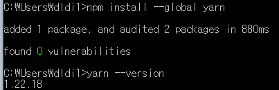
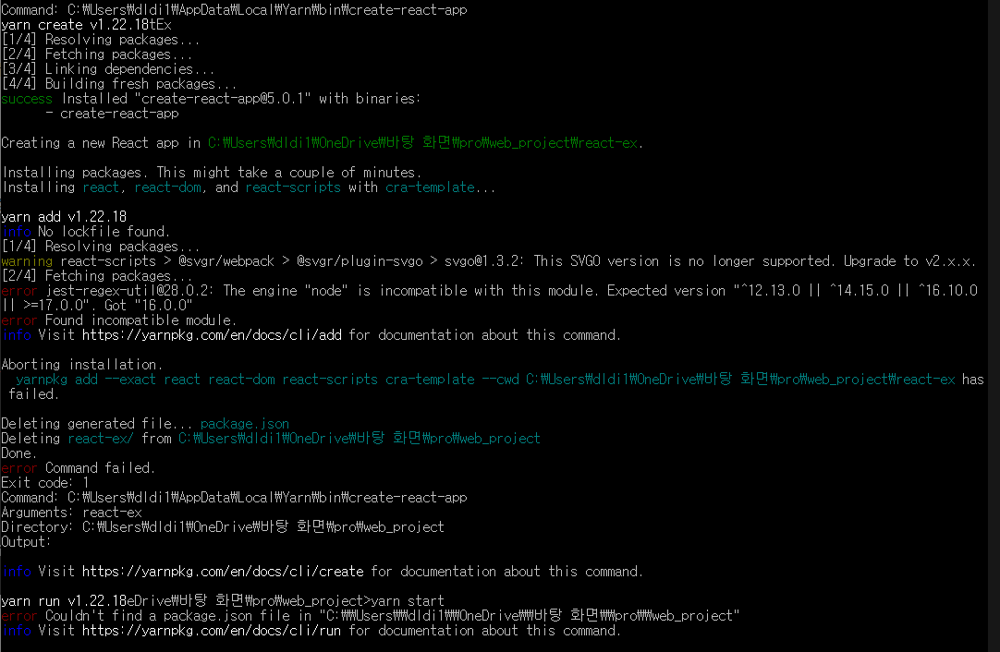

Nodejs / npm 버전확인
- 기존 웹 작업 관련해서 설치함에 따라 버전확인만 진행
- 아래 이미지 참조
yarn 설치 및 버전확인
- yarn은 npm의 단점을 보안 역활
- 속도 개선 및 보안 우세
- 최근 들어선 속도도 고만고만하다 한다.
- 불필요하다 생각하면 생략가능
- 아래 이미지 참조

CRA (Create React App) 생성
- React 개발환경을 yarn 셋팅 도구
- ( 사용하지 않는다면, 프로젝트에 필요한 패키지를 수기로 package.json에 추가해야 한다.)
- 아래 이미지 참조
Log
(22.05.09) yarn Err
- 첫 시도는 실패하였다. 아마도 이름에 대문자를 넣어서 실패한듯으로 추정한다.
- package.json 파일을 찾을 수 없어서 err 발생
- yarn '패키지 관련 모듈' 로는 공부 진행이 어려울 것으로 예상

- 차후 도전 예정 일단 보류
(22.05.09) npm(npx) Success
- npm으로 진행
- npm 이 지원하는 CLI 도구 'npx' 사용
- CLI (Command Line Interface) : 마이크로소프트사에서 개발한 확장 가능한 명령어 기반 인터페이스